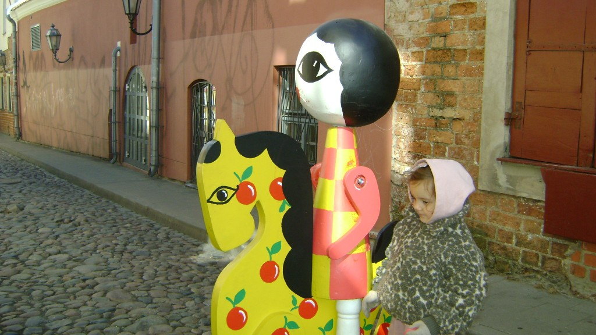

La mia città (non più mia)

La scena è dominata da un contrasto cromatico aggressivo tra il blu elettrico dei soggetti e un vortice rosso acceso che funge da sfondo ipnotico. L'immagine fonde elementi eterogenei: figure antropomorfe stilizzate, quasi simili a maschere o sculture astratte, che occupano il centro, suggerendo una narrazione onirica o metaforica. Sulla sinistra, grandi stelle blu ancorano la composizione, mentre sulla destra emerge, quasi inaspettato, un dettaglio fotografico più nitido.
La sovrapposizione di questi livelli crea un senso di saturazione visiva che spinge l'osservatore a decodificare le relazioni tra le forme geometriche e le texture organiche. L'effetto finale è quello di una "allucinazione digitale" dove il mondo fisico e quello concettuale si scontrano.

Vilnius, 4 aprile 2026Ho scattato questa foto a Vilnius, la mia città natale. Con me c'era mia sorella — metà lituana, metà italiana, cresce in America. Ha conosciuto queste strade, questi colori, questa luce. Ma probabilmente non ci tornerà mai davvero a viverci.
È il posto dove è nata metà della sua famiglia, dove esistono le sue radici — eppure quelle radici non la aspettano. L'opera nasce da questa sensazione: appartenere a un luogo che non ti appartiene più, o forse non ti ha mai apparttenuto davvero.
Questo lavoro parla di due persone: io e mia sorella. Lei è cresciuta in America, metà lituana e metà italiana, ma con un rapporto completamente diverso con entrambe le culture. Quando l'ho vista camminare per le strade di Vilnius — le stesse dove ho passato anni della mia infanzia — capivo che per lei era una vacanza. Per me era qualcosa di molto più pesante.
Vivo in Italia da quasi più anni di quanti ne ho passati in Lituania, ma non sono italiana. Non abbastanza lituana per chi è rimasto, non abbastanza italiana per chi è nato qui. Vederla in quei posti mi ha fatto realizzare quanto questo senso di non-appartenenza sia reale, e quanto sia difficile da spiegare a chi non lo ha vissuto.
Ho sempre visto il mondo con i colori in testa prima ancora di guardarlo davvero. Quando osservo una scena, il mio cervello la traduce già in qualcosa di diverso — più saturo, più schietto, più primario. Non è un filtro che aggiungo dopo: è proprio come la ricevo.
Il rosso, il blu, il giallo. I colori primari danno peso alle cose, le rendono reali in un modo che la fotografia naturale non riesce a fare per me. Lavorare in digitale mi permette di esternalizzare quello che vedo internamente — portare fuori quella traduzione automatica che il mio cervello fa da solo, da sempre.
Interessato a un progetto simile?
Scrivimi per una collaborazione o un preventivo personalizzato.
Chiedi un preventivo →